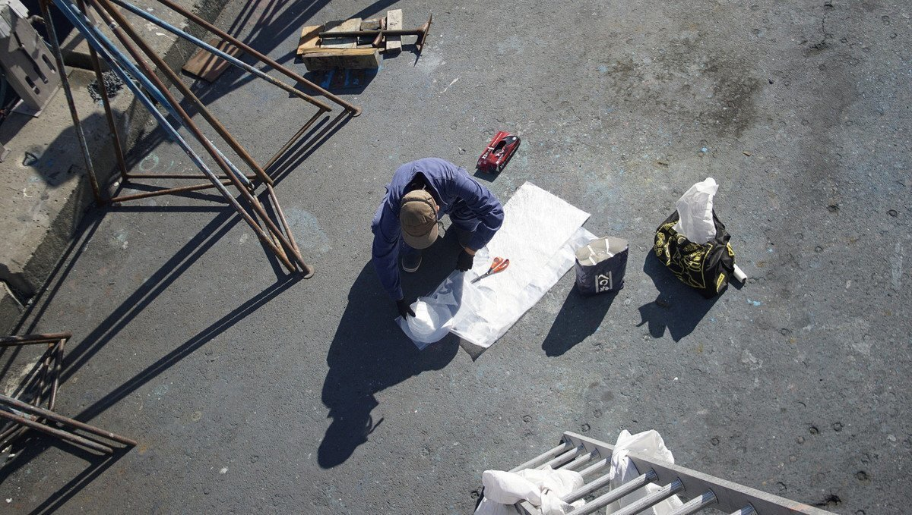

thruhulls
2021.05.14
North Saanich BC, Canada
Click below dates for more recent updates:
When we bought Pino in 2016, the thruhulls were old. In the galley, they had an aged appearance but worked fine. In the head, they were older, but a bit stiff. Then, after 5 years of hard Pacific ocean sailing, they deteriorated a lot and we decided to replace them.
The pictures below are of the state of the thuhulls in 2016, we don't have photos of what they looked like in 2021, but they were scary-looking. The first picture is of the galley, the second in the head.
We closed 5 thru-hulls: the galley raw water sink intake (leftmost thruhull, first photo), head intake (second photo), head outtake (second photo), sink drain (second photo) and macerator.
We kept most of the thru-hulls in the galley (sink, fore/aft cockpit drains and engine intake) but replaced all fittings.
Removing the thru-hulls

Three of the thru-hulls and piping in the head were seized, we had to use a grinder to cut them out. Both the macerator and galley sink fittings came out readily. We used a large pipe wrench to twist the fittings off from inside the boat.
It is easier to twist the thru-hulls out by first applying some heat (heat gun) to soften the sealant around it. In a thru-hull there are slots for a step wrench, a useful tool to keep them from spinning when trying to undo or screw in fittings from inside. We do not own this tool, but the chandlery at the Westport Boatyard lends them out.
Thru-hull replacement fittings
Having never replaced fittings before, we weren't sure how to size them. While unscrewing the ball valves, we found the number written on the side:
- Cockpit drains, 1 1/4 in
- Sink drain, 1 in
- Engine intake, 3/4 in
The numbers were still clearly visible, even if the metal was old and worn. Most marine gear measurements in Canada are imperial, because of our proximity to the United States.
We bought bronze replacements that are rated for marine use. It is tempting to buy cheaper fittings at a regular hardware store, but they stock yellow brass and won't last. Yellow brass and marine bronze are not galvanically compatible. Brass fittings appear more yellow in color and have a smooth machined finish rather than a rough one (due to sand casting). We had difficulty finding bronze hose barbs (hose adapters). The local chandlery did not stock them, we had to order them out.

We bought Groco flush-type thru-hull fittings (it's what the boat came with), although it was difficult to find. The chandlery had one 1 1/4 bronze thru-hull in stock, but we needed a second. They called other stores in the area and could find none. The chandlery had thru-hull intakes with a screen, so we bought that instead and cut the screen out (it worked out quite well). We drilled a hole into the screen, and pried it off with pliers.
We agonized over the mismatching of threads when planning our new plumbing. We'd read it wasn't smart to combine NPS threads with NPT because they don't match as well (less contact area). To fix this common issue, Groco sells thru-hulls with a NPS / NPT combination thread. The peaks of the threads are machined off so that it is easier to match with a fitting with an NPS thread (common with ball valves, street elbows). Of course, this only works if you don't cut down the thru-hulls. We did not have to cut down ours in the end, we dry-fitted each part and found that they all fit under the floorboards. Our final setup was as follows: a Groco thru-hull fitting, a lock nut, a street elbow (to reduce vertical clearance), a ball valve, hose barb and a hose.
For a while, we considered getting the type of fitting with a base supported with screws, but had to abandon that idea because of our lack of vertical clearance.
We dry-fitted all of the parts to make sure that they fit well. Then, we took them apart again and squirted the outside of the hole with some Sikaflex 291 marine sealant, popped in the thru-hull fitting, added sealant from inside, inserted a step wrench into the slots below to keep the thru-hull from spinning while someone was inside threading the lock nut in, screwing it on tight. Even if our threads matched up, we added teflon tape on all threaded connections.

Closing thru-hulls
Pino's hull is thick fibreglass, thicker on the floor behind the keel (where the galley thru-hulls are located). We closed the macerator hole first as practice, then we moved on to close the other 3 in the head in one go.
To make a good patch, it's necessary to sand the fibreglass around the hole down into a bevel. A good bevel will provide strength. The size of the bevel depends on the thickness of the hull (measure the thickness with a caliper). The rule is to multiply the thickness of the laminate by 12. Say your hull is 12.7 mm, multiplied by 12 is 152.4 mm, which is the diameter of the bevel. We marked out the diameter on the hull, taped some wax paper on the inside of the boat with a weight overtop, and used a sander with 60 grit sandpaper to fair out the hull.
To sand, we wore protective gear:
- Tyvek suit
- Safety goggles
- Gloves
- Dust mask
We also covered the boat with plastic sheeting from the waterline down to keep fibreglass dust from blowing around the boatyard. The boatyard is right near a bird sanctuary (poor choice of location), the last thing we want is to blow dust around where they eat.

We prepared our sheets of cut fibreglass beforehand. On a piece of wax paper we drew the outermost circle (of the diameter we measured earlier), and then drew circles of decreasing size within that one until we matched the size of the hole in the hull. It is better to cut the circles beforehand, because when you start applying epoxy it gets messy, and you don't want to waste time cutting more sheets. Using the pattern drawn on the wax paper, we cut out each circle (cutting into the pattern until we were down to the last, smallest circle). We cut circles of both biaxial and woven fibreglass fabric. Biaxial helps to add thickness quicker than if we were using just woven matting.
This is what we used to apply the sheets:
- West Systems 105 epoxy resin
- West Systems 205 hardener
- West Systems 406 colloidal silica
We cleaned the dust off the area with acetone, and mixed some epoxy thickened with the 406 colloidal silica (to a peanut butter-like consistency). We applied thickened epoxy into the hole, and layered on sheets of fibreglass fabric from the smallest circle to the largest (alternating between biaxial and woven), careful to line up fibres when layering woven matting. We used a glue brush to apply the epoxy onto the sheets, applying one sheet on the hole at a time. We also had a fibreglass roller, a useful tool to spread the epoxy around evenly and to pop air bubbles. Others (like our good mentor Gerry) like to prepare mat 'sandwiches', which involves laying a few layers on a piece of cardboard, and adding epoxy to wet them thoroughly before applying them on the hull. Applying dry sheets on the hull directly just means that you have to add more epoxy so that the sheet layered over top will stick to it, this is what we did and it worked out fine. It is better to pre-soak biaxial with epoxy though, since they require more epoxy than woven fibreglass.
We let the patch dry. When dry the patch will develop a waxy whitish haze known as amine blush. It is a chemical reaction that occurs between water, carbon dioxide, and the amine component of epoxy coatings. Nothing will stick well to amine blush. We scrubbed off the surface with a scotch pad, water and a bit of dish soap to remove the blush. We let it dry, and sanded the area lightly, again, cleaning the dust off with some acetone. Then, we mixed up more thickened epoxy to fill out the rest of the holes. We used plastic scrapers to apply it, brushing off the excess with one scraper, scooping it up with the other and applying it back. Having a wide scraper is necessary for this job, so that we could use it to match the bevel of Pino's hull.
We also added thickened epoxy to the inside of the hole. It would have been better to add fibreglass sheeting to the inside too, we did it for the macerator hole, but we did not think it was necessary for the rest.
The holes are barely discernible with bottom paint! We're glad we took the time to do this job, it was a good learning experience. We had good mentors helping us along the way (thank you Gerry and Rick), but we also referenced a lot of the West Systems videos on fibreglass repair on YouTube. Their videos are very thorough and helpful.
We also enjoyed the posts on Marine How-To. Their posts on how to replace thru-hulls proved essential, and we used some of their wording throughout this text (especially about yellow brass).
We removed all the thru-hulls in the head so we could switch to a dry toilet.
2023.04.08
Victoria, BC, Canada
On our list for our spring 2023 renovations, was to replace, and enlargen, the thru-hulls and hoses for the anchor locker drain. Our anchor locker is external(see below image), and it isn't sealed.

If we beat to weather in heavy seas the bow scoops up a lot of water. The water doesn't drain quickly, and gets clogged very easily. We'd often arrive into port to find we were heavy in the bow, only to discover that the anchor locker was full of water, with the drain opening clogged, by mud, leaves, or other.
The bronze thru-hull for the drain(and associated fittings) were getting very old and worn. One of the hoseclamps was stuck in place and we had to cut through it. We removed all of the old fittings and cleaned up the holes.
We enlargened both holes using ab appropriately sized holesaw. The top drain was easy enough to do, but the bottom one was tricky. The thru-hull is at the bow, and there isn't a ton of clearance to drill a hole from the inside... but stubborn, we did it anyway. The result is that the hole was not entirely straight. We ought to have done the hole from the outside, but holding a drill over the water in a busy bouncy marina is a tricky affair.
We bought two Marelon thru-hulls and a length of hose. Marelon is a formulation of polymer composite compounds using composite reinforced polymer and additives, for use below and above the waterline. Although, we're only comfortable using this above the waterline. We still prefer bronze for underwater(see above post). It is more UV resistant than most plastic(nylon, pvc, polypropylene), and is supposed to also be more abrasion resistant... but it is still plastic, and much care must be taken when installing these.
We squirted a generous layer of Life-Calk under the head of both thru-hulls. Life-Calk is a marine polysulfide sealant which can be used above and below the waterline, a good option to seal thru-hull fittings, and underwater seams. Unfortunately, the color we had on hand was brown and doesn't look great, but at least it won't leak.
One person was inside, turning the nut, while the other did their best to hold the head of the thru-hull from the outside. A step wrench is incredibly useful to hold the head of a thru-hull, but we didn't have one and had to improvise. The issue with not using a tool that fits is that it is easy to damage the slots. Because the hole isn't perfect staight, the thru-hull doesn't lay up completely flat against the outside. What a shame. It is not ideal, but it is also barely discernible.
The hose we got was a discounted off-cut from a marine store. It's a sort of sanitary hose, but will work fine for this. We measured and cut a length of the hose to bridge the gap between the two thru-hulls, heat up the ends of the hose with a heat gun to make it easier to slip on, then secured each connection with two hose clamps.
When adding hoseclamps, have the clamps on opposite sides(like in the pic below). The idea is that if there is a leak, the area under the body of the clamp may cause corrosion but at least it won't affect both. Thank you to Mark(not_a_label) for this precious tip.
We let the caulking dry and filled the locker with water to test the seal. No leaks, from either thru-hulls.